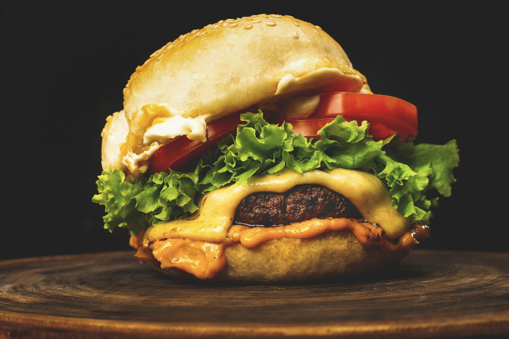

Burger Recipe

This is goint to be a step by step recipe for the best hamburger.
Please, pay attention and strictly follow each and every step
Ingredients list
- Good quality burger patty
- A pair of Buns
- 1 Onion
- 1 tomate
- 1 lettuce
Step by step recipe
First, make sure your patty isn't frozen for better cooking and have your tomate and lettuce washed and ready
- Cut some onions in Julienne and cook them with some butter
- While the onions are cooking, cut the tomato and the lettuce
- Cook the burger patty
- (Optional) Toast the buns with butter
- Prepare the buns with mayonaisse on the bottom one
- Put lettuce on top of the mayonaisse, and the tomatoes on top of the lettuce
- Place the patty on top of the tomatoes and put the cooked onions on top of it
- Put ketchup on the top bun and place it above the onions
There you have it, the recipe for the best hamburger created by Mati.
Home